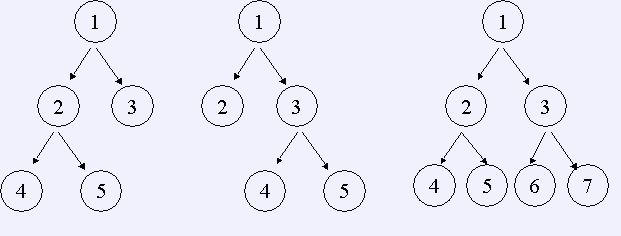

如果一棵树的所有非叶节点都恰好有n个儿子，那么我们称它为严格n元树。如果该树中最底层的节点深度为d （根的深度为0），那么我们称它为一棵深度为d的严格n元树。例如，深度为２的严格２元树有三个，如下图：

给出n, d，编程数出深度为d的n元树数目。
仅包含两个整数n, d( 0 < n < = 32, 0 < = d < = 16)
仅包含一个数，即深度为d的n元树的数目。
【样例输入1】 2 2 【样例输入2】 2 3 【样例输入3】 3 5
【样例输出1】 3 【样例输出2】 21 【样例输出2】 58871587162270592645034001